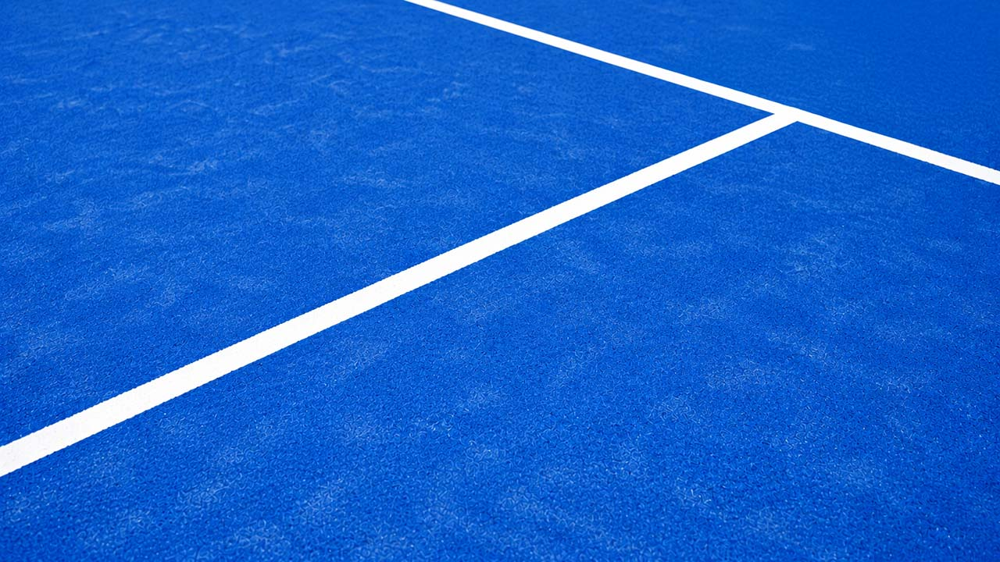

Visual selection layer
Smoother content
selection component
Lines, small text and pictures merge into a single padded shape with softly rounded corners, even where lines meet.
Drag across anything, the form included.
Dev Ieffe
Notes · 2026
Quiet light on white walls1. Native highlights stack a layer
per fragment, so small print, inline code
and keys like ⌘ A leave seams between lines.

Inline images stand taller than text, tags like New Beta run smaller, yet one layer wraps them.
-
Selection geometry Padded, unioned and traced
-
Rounded intersections Convex and concave corners share one radius